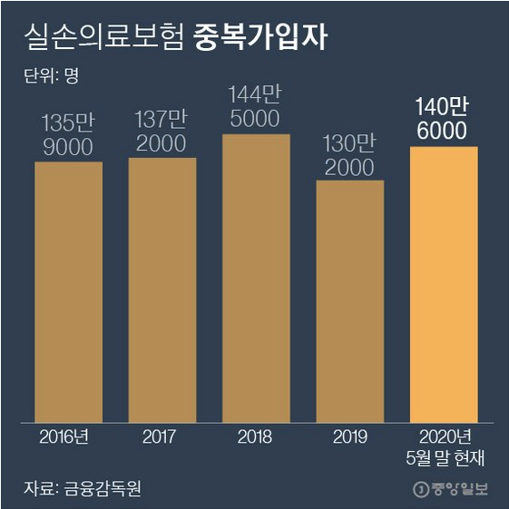
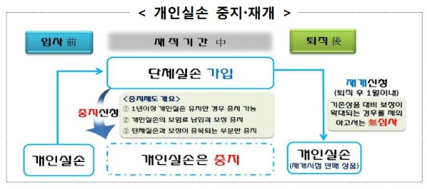
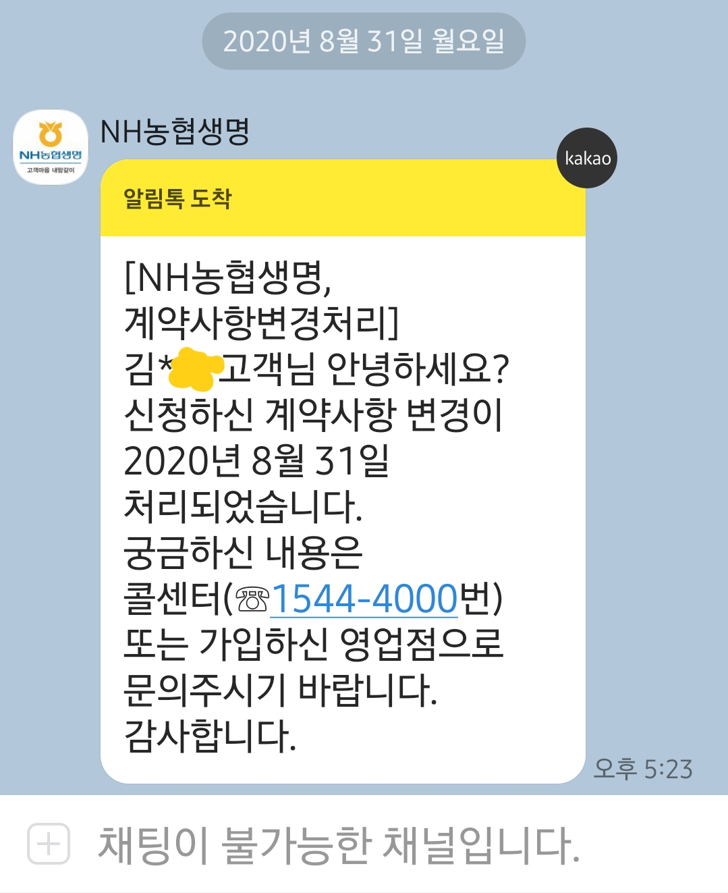

[대환장 성공후기] 중복가입한 개인실손의료보험 중지
콜센터 직원도, 창구 직원도 잘 몰라서 환장하게 만드는 제도
중복가입한 실손의료보험을 중지하는데 성공(?)했다.
콜센터도 창구직원도 잘 모르는 제도라 난이도가 상당했다.
오프라인에서 액티브x와 플러그인 덩어리들을 설치한 기분이다.
실손의료보험 중복가입 중인가?
사실상 제2의 건강보험으로 인식되는 실손의료보험.
기본적으로 하나씩은 가입하고 있는 개인이나 가정이 많다. 그런데 1인 1실손보험을 넘어서 중복 가입하는 경우도 종종 있다. 특히, 직장에 따라서는 직원 또는 직원의 가족을 대상으로 단체실손의료보험을 가입하는 경우가 있다.
개인이 보험료를 내는 <개인실손>과 회사가 내주는 <단체실손>
나의 경우가 그러한데, 우리나라에서만 연간 150만명 정도가 중복가입하고 있다고 한다. <개인실손>, <단체실손> 2개의 실손의료보험을 가입했다하더라도 보장 한도가 커지는 경우가 있을 뿐 별다른 혜택이 없다. 즉, 보험료는 2중으로 나가는데, 보장이 2중으로 되는 것은 아니다.

실손의료보험 중지제도란?
이런 중복 가입자들의 보험료 낭비를 막기 위해서 실손의료보험 중지 제도라는 것을 금융위에서 만들었다. 간단하게 얘기하면, 직장 다닐 때는 <개인실손>보험료 납부를 중지하고, 직장의 단체실손으로 이용하다가, 직장을 그만두면 개인실손보험을 살리는 제도다. 자세한 내용은 금융위 안내나 뉴스 기사를 참고해 해보자.
카드뉴스로 보는 실손의료보험의 전환·중지 등 #연계제도
— 금융위원회 (@fsckorea) March 13, 2018
주요 내용 알아볼까요?
카드뉴스 전체보기 ▶https://t.co/D6YhdQXx2f pic.twitter.com/XTZw15yJOf
중복한 실손보험이 있으면 해지를 하면 되지 왜 굳이 중지를 할까? 해지 후 재가입도 하나의 옵션이 될 수 있다. 그러나 재가입할 경우가 미래 시점이고, 보험 가입 심사를 다시 받아야 하기 때문에 보장의 연속성이 크게 떨어질 수 있다. 반면, 중지는 <단체실손> 보장이 끝난 후 1개월 안에 신청하면, 기존의 <개인실손>을 무심사로 재개할 수 있다. 결국, 회사에 다니는 동안에는 <개인실손> 보험료 납부를 중지하고, 회사의 <실손보험>에서 보장을 받다가, 회사를 나오면, 중지했던 <개인실손>을 살려서 전환할 수 있는 제도이다.
이렇게 이용자들의 ‘눈먼 돈'을 지켜주는 제도인데, 사실상 이용자가 없어서 유명무실한 제도라고 작년 국감에서 지적받기도 한 제도다. 이용하고 있는 사람이 거의 없다고도 알려진 제도다. 우리나라의 많은 상품이 그렇듯, <가입은 쉽게, 중지/해지는 어렵게>와 같은 일들이 여기서도 펼쳐진다.

<개인실손>을 중지하기 위해서는 <개인실손>에 가입한지 1년이 넘어야 한다. 조건을 충족하면, 중지제도를 이용할 수 있다.
개인실손 중지의 이득과 손해
실손보험이 중복가입일 경우 중지하면 얻는 이득과 손해는 무엇일까? 이득은 중복가입의 특별한 혜택이 없는 상황에서 매월 나가는 보험료를 아끼는 것이다. 명확하다. 반면 손해는 조금 불확실하다. 왜 불확실할까? 아래 인용한 중앙일보 기사에서 잘 설명하고 있다.
그런데도 당장 보험료를 아끼는 게 중요하다고 판단한다면 납입 중지제도를 활용할 만하다. 하지만 이 경우 나중에 재개할 땐 바뀐 보험 약관을 적용한다는 걸 유념해야 한다. 실손보험은 첫 출시 이후 꾸준히 보장 내용이 축소돼왔다. 다시 개시할 땐 훨씬 나쁜 조건을 감수해야 할 가능성이 크다는 의미다.
실손보험 보장 내용이 꾸준히 업데이트되고 있는데, 아무래도 과거보다 현재, 현재보다 미래의 실손보험의 보장 내용이 축소될 수 있다는 것이다. 중지했던 개인실손을 재개하는 경우 무심사로 개인실손 재개가 가능하지만, 보장내용은 재개 시점(미래시점)의 실손보험으로 바뀐다는 것이 리스크라면 리스크다. (이왕 중지제도를 도입한 것이면, 보험료 납부 중지뿐만 아니라 보장내용도 유지해 줘야 하는 것 아는가?)
실손의료보험 중지는 개인의 선택에 걸린 이슈이긴 하지만, 나의 경우에는 현재 2중으로 보험료를 내는 것이 나중에 감당할 리스크보다는 더 큰 리스크로 여겨졌다. 쓸데없이 보험료를 내는 것은 꼭 피하고 싶고, 미래 실손보험의 보장 내용이 그렇게 심하게 축소되지는 않을 것이란 기대로 개인실손을 중지하기로 했다.
실손의료보험 중지제도 본격 이용후기 - 1차 시도의 교훈
여기서부터 중지제도 성공 후기다. 실손의료보험 중지제도의 존재를 안 것은 2019년 하반기다. 실행을 옮긴 것은 2020년 초다. 그런데 개인실손을 2019년 상반기에 인터넷으로 가입해서 1년 유지 조건을 충족시키지 못했다. 암튼, 당시에도 시도를 하면서 얻은 것은 아래와 같은 교훈이다.
- 개인실손 중지는 오프라인으로만 가능하다. 인터넷/콜센터 안된다.
- 개인실손 중지는 단체실손에 가입한 직장인 본인만 가능하다. 함께 가입합 가족은 중지제도 이용 대상이 아니다.
- 개인실손 중지를 위해서는 개인실손 가입한지 1년이 경과해야 한다. 나의 경우 1년이 안되어서 1차 시도에서 중지가 안되었다.
- 개인실손 중지를 위해 필요한 서류는 <재직증명서>, <단체실손 보험증서> 2개다.
별것 아닌 것 같은 교훈이지만, 실제로 창구를 방문해서 꽤 많은 시간을 보내고서야 알게된 교훈이다. 중지제도를 이용하는 사람이 얼마 없다 보니, 창구 직원도 뭔 제도인지 몰라서 본사/콜센터에 연락해서 처리 방법을 공부해서 알려주는 제도이다. 1차 시도는 가입 기간 1년 자격이 충족되지 않아서 실패로 끝났지만, 2차 성공을 위한 배움이 있었다.
성공후기(2차 시도)
2차 시도는 8월 말에 전격적으로 이루어졌다. 개인실손 가입 1년 자격이 충족되었기에 야심 차게 2차 시도에 돌입하였다.
시행착오를 줄이기 위해서 개인실손 보험사 콜센터에 미리 전화를 해서 절차를 한 번 더 확인했다. 사실 1차 시도의 교훈은 시도 반년이 넘어서 잘 기억나지 않았다.
- 콜센터 통화
- 10분가량 통화를 한 끝에 알아낸 것은, 신분증을 가지고 인근 은행 지점에 방문하여 “실손의료보험 중지 신청"하면 된다라는 것.
- (주의 : 아래 언급되어 있지만, 신분증만 있으면 안된다.)
- 지점 방문
- 내가 가입한 NH생명보험은 농협은행 지점에 방문해서 중지 신청을 해야했다.
- 은행 지점을 방문해서 콜센터에서 안내받은 내용을 설명하니, 창구 직원이 갸우뚱거린다.
- 전화로 본사인지 콜센터인지에 전화를 걸더니 절차를 열심히 받아적는다.
- 그런데! 신분증만 있으면 되는게 아니었다. <재직증명서>, <단체실손 가입증명서>가 필요하단다.
- 1차 시도때 폰에 받았던 재직증명서(2020년 1월자 발급)를 현장에서 창구직원 메일로 보내고,
- 회사 단체실손 보험사의 모바일앱에 로그인하여 가입증명서를 직원에게 보여주고, 직원이 본인 폰으로 사진을 찍어서 제출했다.
- 폰으로 안되었으면, 집이나 회사에서 다시 서류 뽑아서 와야할 운명이었다.
- 메일과 카메라로 넘겨준 서류를 직원이 출력했고, 중지 처리를 위한 서류에 사인을 하고 보험사에 보냈다.
- 그런데, 재직증명서는 최근 것이 아니라 안된다고 그러고,
- 보험증서는 사진으로 찍어서 안된다고 한다.
- 지점을 방문한지 30분이 넘었는데, 돌아온 답이 이랬다.
- 콜센터 직원의 ‘신분증만 들고'때문에 1차로 꼬이고, 창구 직원이 공부하느라 딜레이가 생기고, 서류를 보냈더니 최근껄로 제대로(사진말고) 보내라고 해서 또 꼬였다.
- 창구 직원이 또 전화를 걸어서 콜센터 상담내역(아까 10분 통화)을 조회하더니, 내용이 없다고 그런다. 내 폰에 녹음되어 있다고, 통화시간과 번호를 보여줬다.
- 창구 직원 뒤에 있던 지점 관리자가 계속 나를 노려본다. 나도 노려봤다. 내 잘못은 아닌데, 돈안되는 나같은 손님때문에 창구 대기 인원이 늘어난 탓이라 짐작한다.
- 결국, 서류 2개를 다시 보내줘야 해서, 집으로 와야 했다.
- 창구 직원에게 메일로 서류를 보낸다고 했다. 보내고 전화 줄테니 명함달라고 해서 받아왔다.
- 깔끔하게 개인실손 중지하고, 집으로 오는 길에 베라에서 31day 이벤트로 아이스크림을 사려고 했던 계획은 무산되었다.
- 집에서 윈도우 PC를 켜다.
- 재직증명서는 생각보다 쉽게 최신 것을 받을 수 있었다.
- 회사에서 아웃소싱하는 <월급날>이라는 서비스를 이용해서 <재직증명서>를 바로 받을 수 있게 해놨다.
- “익스플로러에서 최적화되었습니다"가 아니라 모바일, 맥, 크롬에서 다 된다는 것이 정말 장점이다.
- 문제는 회사 단체실손 보험증서를 다운받는 것이었다.
- 모바일앱에서는 <가입증명서>를 쉽게 조회까진 가능했으나, 출력이나 캡쳐가 불가능했다.
- 맥북으로 보험사 홈페이지에 접속하니, 메일로 가입증명서 전송이 가능했다.
- 메일로 가입증명서가 와서 열려고 하니까, <인터넷 익스플로러>에서만 가능하단다.
- 맥북에는 익스플로러가 안깔려 있어서, 크롬에서 IE TAB을 깔아서 가입증명서를 여니까 경로 에러가 뜨면서 안열린다.
- 장롱에 넣어둔 윈도우 PC를 꺼내었다.
- 메일을 열어서 겨우겨우 가입증명서를 여는데 성공했다.
- 주민번호를 입력하라고 하고, 또 보안 플러그인을 하나 깔더라…
- 가입증명서를 PDF로 출력하고, 메일로 창구 직원에게 보냈다.
- 창구 직원에게 전화를 걸어서 메일 확인을 요구했고, 드디어 확인에 성공했다.
- <재직증명서>, <단체실손 가입증명서> pdf 파일을 확인한 것이다!
- 재직증명서는 생각보다 쉽게 최신 것을 받을 수 있었다.
그렇게 우여곡절 끝에 중지에 성공했다. 나에게 ‘신분증만 들고'라고 잘못 안내한 콜센터 직원이 다시 전화와서 연신 ‘죄송합니다'를 외치고, 창구직원은 지점 전화번호로 계약중지 처리되었다는 문자를 보내줬다. 개인실손 보험사의 공식적인 연락도 기다리고 있었는데, 마침내 계약변경을 고지하는 플친 메시지가 왔다. 명시적으로 중지되었다고 해주면 되는 것을 벙벙하게 계약사항 변경이라고만 안내하는 것이 참…

나가며
이상한 제도(제도만 내밀고, 잘 이용하고 있는지는 사후에 크게 신경 쓰지 않는듯한 정책당국), 이상한 정책(가입은 모바일로 간편하게 할 수 있으면서, 중지는 이렇게 어렵게 만든 보험사의 저의) 속에서 고통을 받는 것은 콜센터와 창구 직원 같은 말단의 대고객 직원들이다. 이렇게 어렵게 제도를 만들고, 이렇게 어렵게 본사에서 정책을 만든 탓인데, 말단의 직원에게 욕해봤자 무슨 소용이 있느냐. 아까운 시간과 이런 프로세스에 대한 빡침은 고스란히 내 몫이다.
악마는 디테일에 숨어 있고, 나라님이 디테일까지 일일이 신경 써줄 순 없다.
관치가 여전히 살아 숨 쉬는 우리나라 금융업에서 정책당국의 제도, 금융기관 본사의 정책이 어떤 결과를 만들어내는지 잘 보여주는 또 하나의 사례다. 악마는 디테일에 있다고, 관치로 운영되는 제도와 본사 정책은 각종 면피 기제 속에 결국은 말단의 소비자와 직원 사이의 분쟁을 조장한다. 가입은 버젓이 모바일로 금방 되는 상황에서 신분증으로 본인 확인하고, 각종 서류에 사인하고, 증빙서류를 출력해서 내는 것이 도대체 무슨 짓이란 말인가? 제도를 몰라서 쩔쩔매는 창구 직원, 쩔쩔매다 보니 대기 인원이 차서 걱정인 지점 관리자, 그런 상황 속에서 빡침을 견뎌냐 하는 소비자가 더 이상 없는 시대가 어서 오기를 희망한다.
)